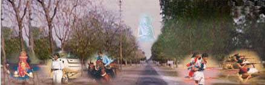

| ABOUT US |
| SCHOOL EDUCATION |
| HIGHER EDUCATION |
| ADMISSIONS |
| FINANCIAL ASSISTANCE |
| LIBRARY |
| EXAMINATION |
| SPORTS |
| BANASTHALI RADIO |
| MOOCS |
|
|
| DEPARTMENTS |
| FACULTIES |
| RESEARCH AND DEVELOPMENT |
| CAMPUS |
| NAAC ACCREDIATION |
| HOW TO REACH BANASTHALI |
| CONTACT US |
| SKILLS |
| RECRUITMENT |
| NEWS, EVENTS & ANNOUNCEMENTS |
| ONLINE PAYMENT |
|
|
|  |
|
"Banasthali is enshrined in my heart"
- Mahatma Gandhi (1946)
"If I had been a girl I would have
come to Banasthali for my education"
-Pandit Nehru (1945)
|
Accredited with the highest possible grade 'A++' with CGPA 3.63/4.00 by NAAC
|
|
Banasthali Vidyapith aims at the synthesis of spiritual values and scientific achievements of both the East and the West. Its educational programme is based on the concept of "Panchmukhi Shiksha" and aims at all round harmonious development of personality.
Emphasis on Indian culture and thought characterized by simple living and khadi wearing are hallmarks of life at Banasthali.
|
|
|
Panchmukhi Shiksha
Five-Fold Education
|
| Banasthali International
|
Banasthali Online
Banasthali's e-learning program
|
| ALUMNI |
|
|